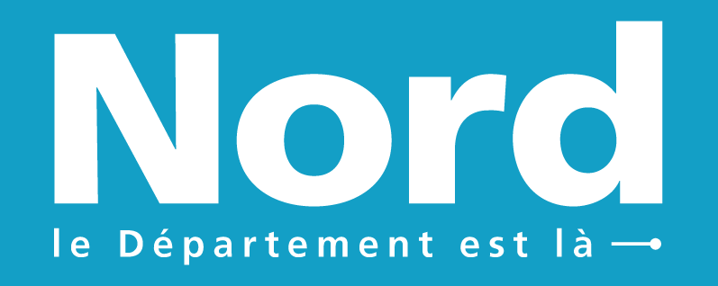
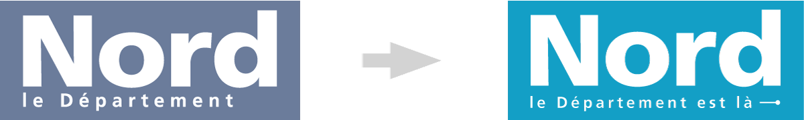
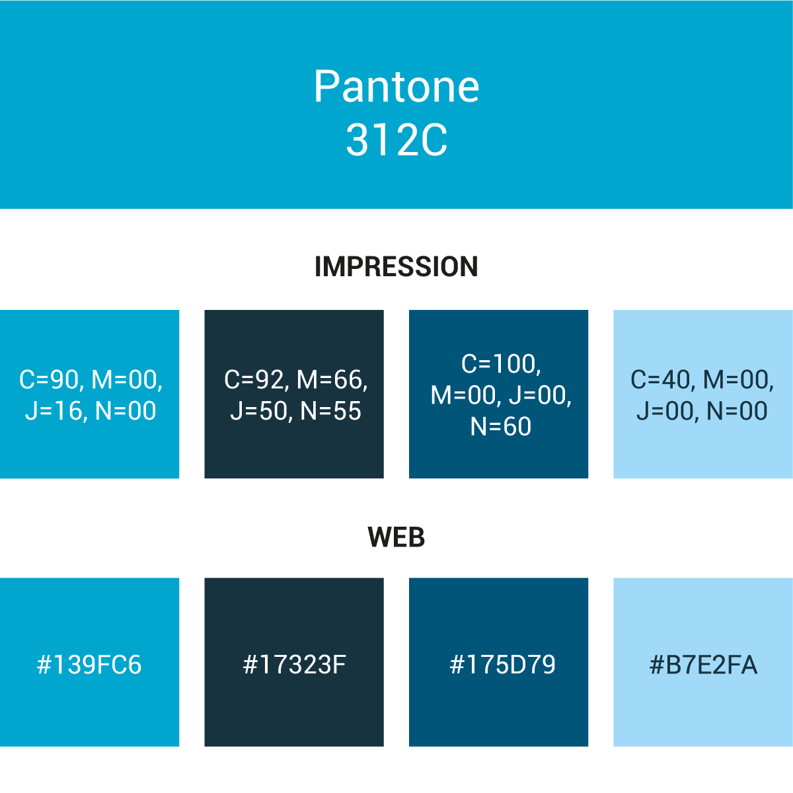
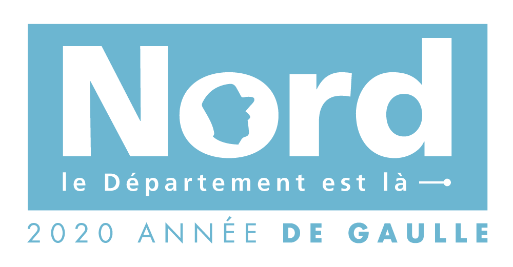
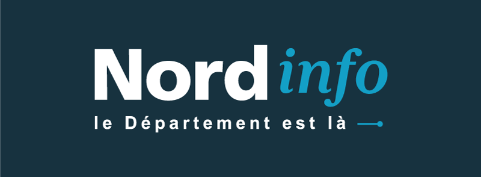
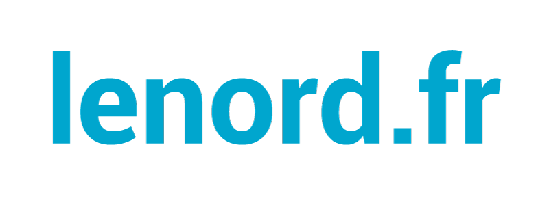
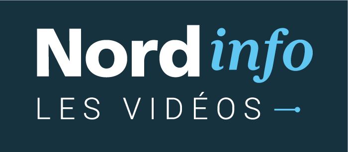
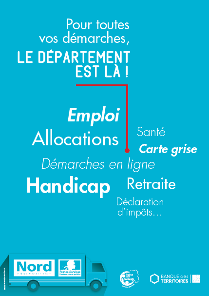
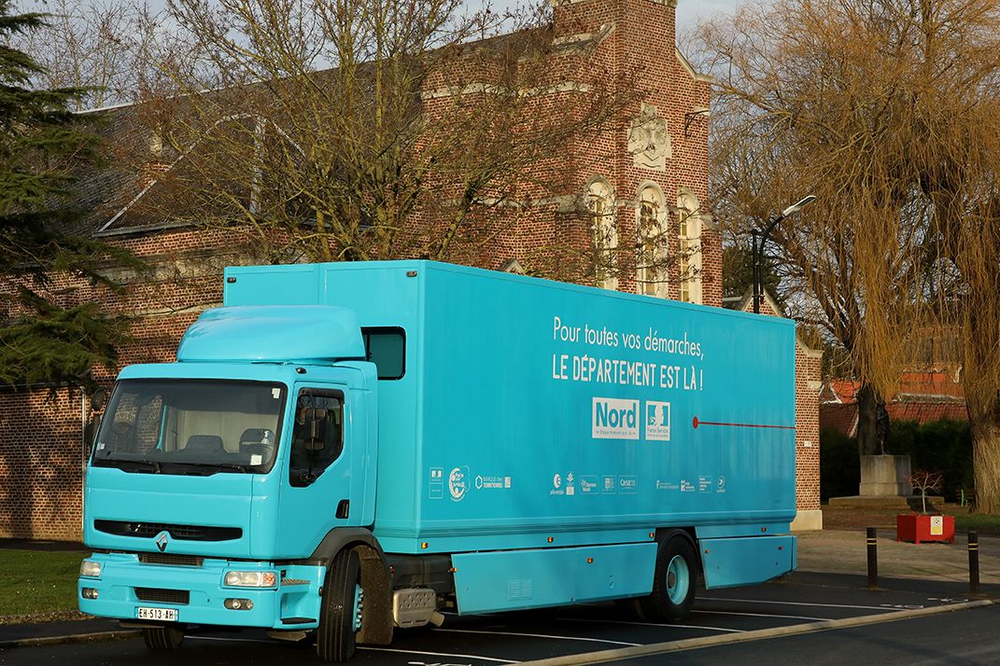
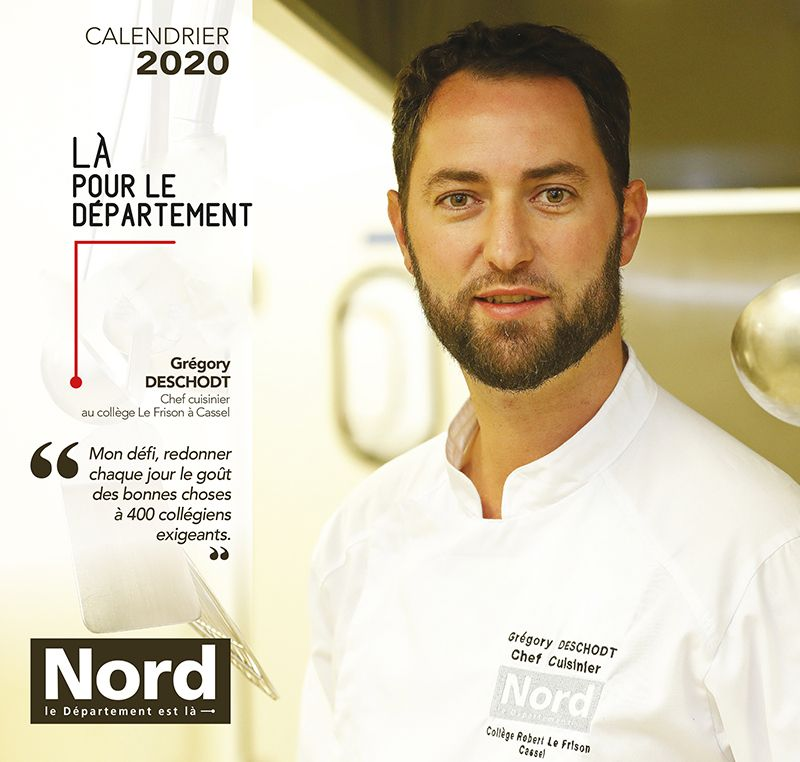

Le récit d'une transformation
La Direction de la communication du Département du Nord a engagé, dès 2016, un plan général de transformation pour inscrire la communication du Département dans la dynamique du changement impulsée par la Présidence (trajectoire 2020).
Plusieurs réformes ont ainsi été entreprises :
- Au niveau de l’organisation et des pratiques internes : Mise en place de méthodes collaboratives, développement de nouvelles cultures professionnelles, définition et mise en place de nouveaux process qui facilitent la transversalité entre les services.
- Dans l’approche des médias : Refonte du magazine, création d’un « éco-système » médiatique, d’un flux d’info…
- Dans le management de la marque NORD : Lancement d’une mission « brand management » pour définir les valeurs de la marque et réussir son appropriation, création d’un nouveau « bloc-marque » et d’une signature de marque Le Département est là !
Nos engagements
- Un engagement qui s’appuie sur les talents de nos agents : des agents LÀ, pour le Département.
- Un engagement pour plus de proximité avec les habitants : une vocation du Département plus que jamais nécessaire. Être LÀ, concrètement, au quotidien.
- Un engagement en faveur de services publics innovants et plus accessibles : le Département déploie de nouvelles politiques ambitieuses qui changent le quotidien de nos usagers. Une communication efficace doit le rendre visible au regard de tous. Avec près d’une trentaine d’agents certifiés OPQUAST (qualité web) au sein de la Direction communication, le Nord est aujourd’hui l’une des collectivités les plus engagées pour l’accessibilité de ses réalisations.
- Un engagement sans cesse renouvelé : le Nord se réinvente en permanence pour répondre aux attentes du territoire et pour anticiper les enjeux d’une société en constante évolution.
Le Nord se réinvente en permanence pour répondre aux attentes du territoire.
Notre couleur
Le logotype passe du gris à un bleu lumineux. Cette évolution est le parfait symbole d’un Département qui a retrouvé des moyens d’action, et qui affiche fièrement le résultat des efforts consentis. Ce bleu renforce la visibilité de l’institution et facilitera son appropriation par les habitants.
A cette couleur, une gamme chromatique a été associée
Cette palette de bleus nuancés renvoie également à l’image des cieux changeants et des reflets de la mer du Nord.

L’ensemble de cette gamme a été étudié pour offrir les meilleurs contrastes, et ainsi se rendre accessible du plus grand nombre.
Notre signature
Plutôt qu’un changement radical, la nouvelle marque propose une évolution graphique qui permet de capitaliser sur certains codes.
Cette évolution n’aura donc pas d’impact sur les supports de communication existants qui seront conservés et remplacés uniquement au gré des besoins.
Un changement responsable donc !
La signature, associée désormais au logotype, incarne la vocation du Département du Nord et traduit son ambition. En apparence, un petit changement lexical mais un grand changement de sens.
Le Département ne se contente pas de signifier son existence, il affirme ses engagements.
Le logotype du Département peut, sur décision du Comité de Marque, être décliné graphiquement selon un évènement majeur.
Notre offre
Derrière cette signature, c’est l’offre d’information qui s’enrichit et se modernise pour être au plus proche des attentes et des usagers de nos lecteurs et internautes.
Le magazine du Département du Nord

Le flux d’actualités départementales
Le site internet du Département
La chaîne vidéo du Département du Nord
Exemples de supports de communication
 Dispositif évènementiel

Les agents sont des usagers comme les autres !
Employeur responsable, le Département promeut un management durable et une valorisation de ses 8000 agents (et 2500 assistants familiaux) qui assurent un service public de qualité dans 117 métiers différents.
Attirer et recruter de nouvelles compétences dont les territoires et leurs habitants ont besoin tout en fidélisant les collaborateurs engagés, tels sont les deux axes de la marque employeur déployée par le Nord.
La marque employeur c’est l’affaire de tous !
Nouveau site de recrutement, investissement dans les réseaux sociaux et les plateformes digitales d’emploi, partenariats avec les écoles et universités, développement des actions de bien être au travail sur tous les sites, renforcement des dynamiques collaboratives et d’association des agents telles la Fabrik 59... les éléments différenciants de la marque sont divers et par essence transversaux.
Une mission Marque employeur a été créée au sein de la DGA Partenaires des évolutions et des Potentiels des Services pour appuyer les équipes de la DRH et les référents RH des DGA opérationnelles.
Nos outils
Afin d’assurer le respect et la cohérence de son identité visuelle de marque, le Département du Nord a élaboré deux guides de référence.
Guide identité visuelle et repères graphiques
Il est destiné à celles et ceux qui souhaitent comprendre dans le détail les codes visuels du Département du Nord.
Téléchargez le guide d'identité visuelle et repères graphiques (PDF 1,1 Mo)Guide graphique pour les sites web publics
Il est relatif aux sites web du Département et plus particulièrement à ceux délivrant un service en ligne aux Nordistes. Destiné aux acteurs (internes comme externes) en charge de la réalisation de ces sites, ce guide définit les règles graphiques à respecter afin de garantir leur cohérence visuelle.
Le contenu de ce “Guide graphique pour sites web publics” est conforme aux règles nationales relatives à l’accessibilité (RGAA 4) et s’inscrit dans la démarche de qualité web Opquast.
Téléchargez le guide graphique pour les sites web publics (PDF 4,7 Mo){kind=link}